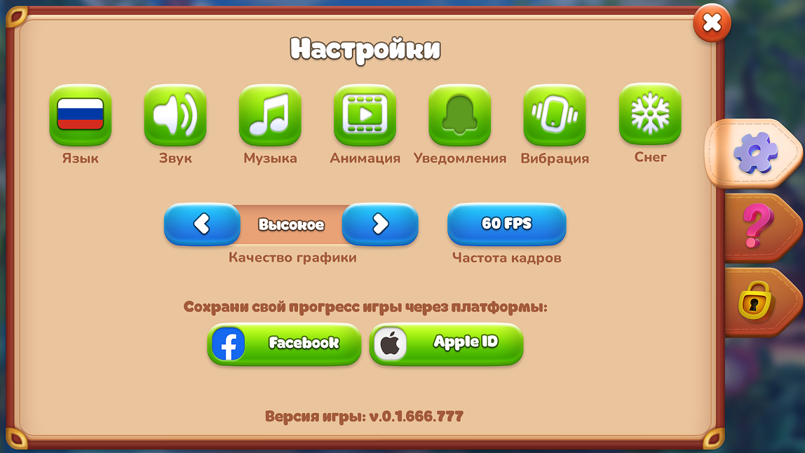
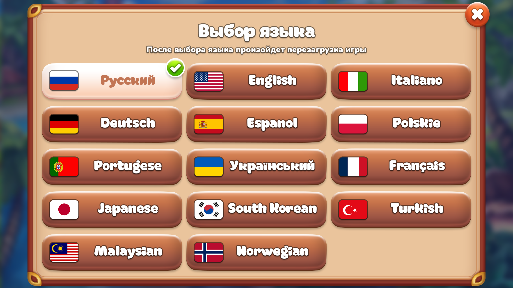
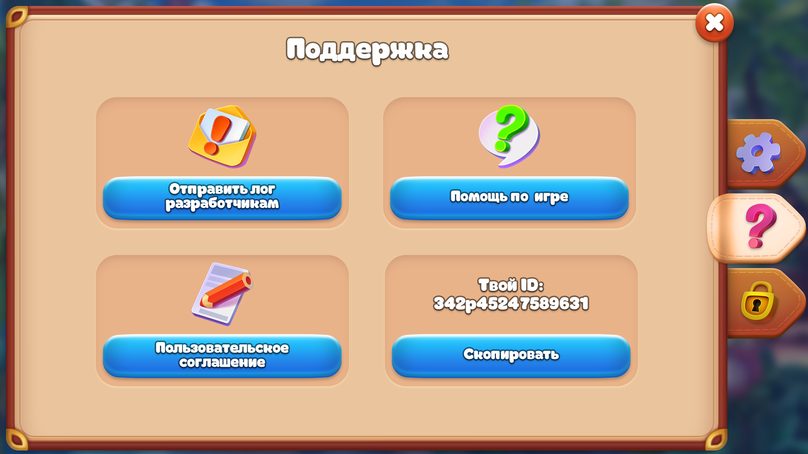
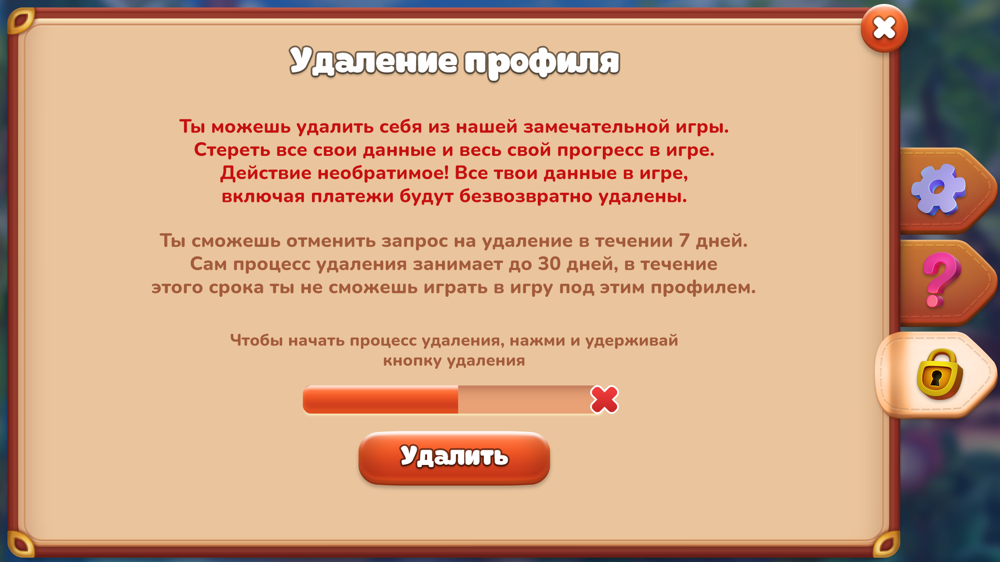
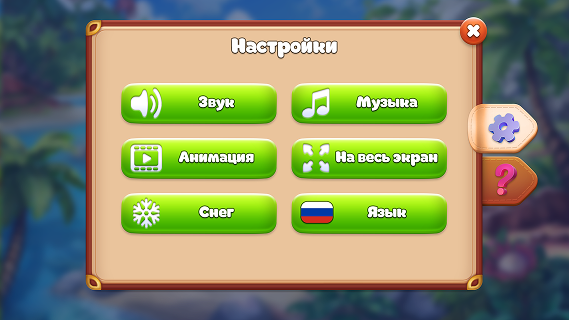
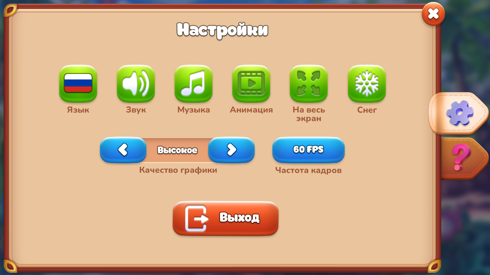

Настройки
В рамках проекта выполнена разработка пользовательских интерфейсов для мобильной и веб-версий продукта. Разработан пак пользовательских иконок с детальной проработкой двух состояний — активного и неактивного для корректного визуального отклика интерфейса.






Stark Games · 2022